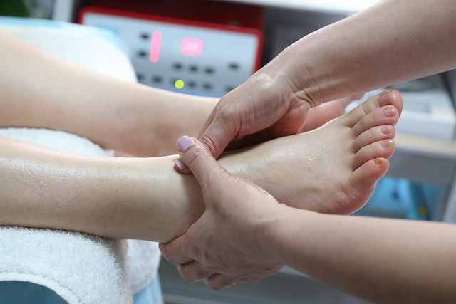
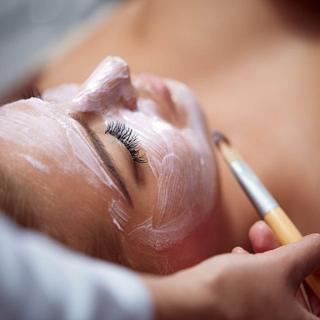

TRATAMENTO LONDRINA · PARANÁ
Protocolo profissional de despigmentação
Plano personalizado que pode combinar produtos profissionais, cuidados domiciliares e proteção solar. É usado para controlar determinadas manchas e reduzir irregularidades do tom da pele.
Como este tratamento é planejado
Associação de ativos despigmentantes, procedimentos selecionados e rotina domiciliar.
Na consulta, a queixa, o histórico, a condição atual da pele e os objetivos ajudam a definir se esta opção faz sentido, se é necessário preparar a região ou se outro caminho é mais adequado.

Quando pode ser considerado
Melasma e outras hiperpigmentações, após identificação do tipo de mancha.
A possibilidade de realizar o tratamento depende de fatores como integridade da pele, exposição solar, procedimentos recentes, medicamentos, alergias e condições relevantes informadas na avaliação.
Recuperação e expectativas
O tempo de recuperação, a necessidade de cuidados posteriores e a resposta variam conforme a técnica, a área e a pessoa. Nenhuma página consegue confirmar indicação, número de sessões ou resultado para um caso individual.
Sinais como dor intensa, secreção, piora progressiva, febre, bolhas extensas ou alteração importante de cor devem ser comunicados e podem exigir avaliação médica.

Atendimento em Londrina e região
Franciele atende em Londrina. Pessoas de cidades próximas do Norte do Paraná podem buscar uma consulta quando desejarem uma avaliação presencial; a indicação continua individual e não depende de onde a pessoa mora.
Agendar uma consulta em Londrina → · Ver todos os tratamentos →